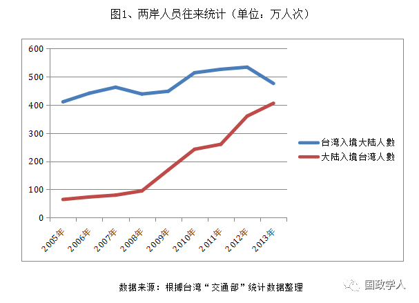
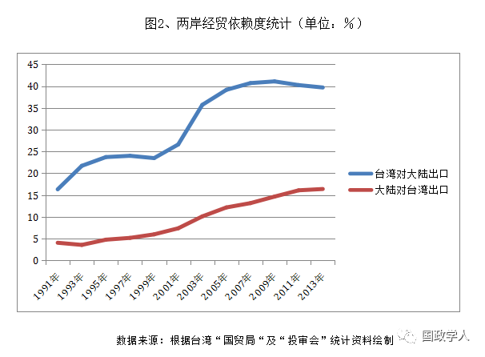
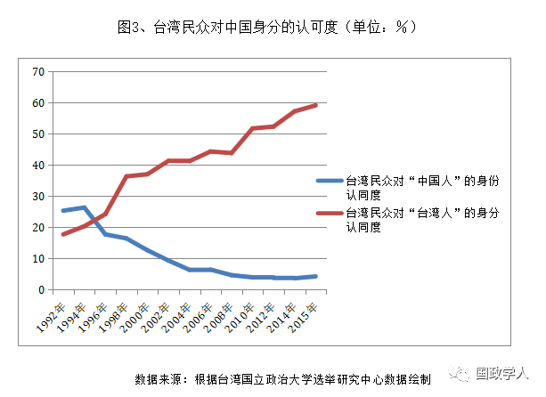
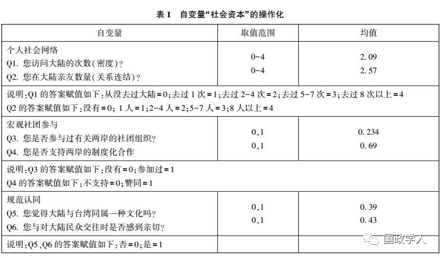
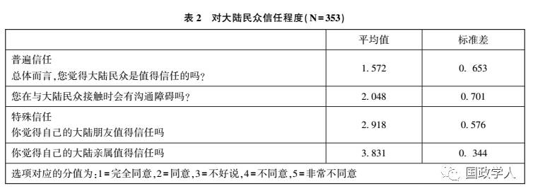
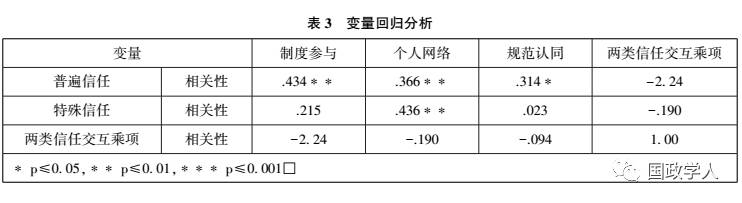
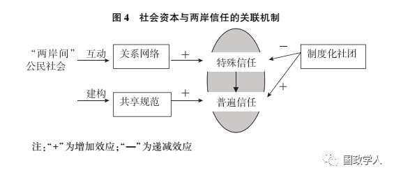

收录于合集

制度、规范与网络：
社会资本对两岸信任的建构效应
曹德军，北京大学国际关系学院2014级博士生
本文获“2015年第十届两岸暨国际精英蹲点奖助研究生夏令营”奖助
摘 要： 2008年以来两岸民间互动达到空前规模，然而与跨海峡公民社会网络相悖的是，台湾民众却对大陆的信任感却不断降低。针对这种“交流生歧义”的现象，本文对蹲点调研的353份有效问卷进行回归分析发现：两岸信任之所以在互动密切的背景下出现明显下降，根本上是两岸信任的网络以私人化、分散化为特征，缺乏制度化整合。为此，建构两岸民间社团，以制度化网络培育合作规范，方可超越两岸关系的特殊信任难题。
关键词： 社会资本、关系网络、规范认同、两岸信任
社会性和解是政治和解的前提条件，民间交流是另一股软性的和平力量。传统国际关系理论视野下的台海问题分析，大多以“国家”为主轴，在主权与治权问题上博弈冲突，但是结合两岸关系的发展特点， 我们认为以“社会”为主轴可以更好弥补政治议题的困境。 两岸政治系统嵌入在广阔的社会性网络之中，任何重大政治决议也必须首先取得两岸社会的共识。也就是说，在和平根植于社会有机体之中。两岸社会有机体的互动孕育着丰富的社会资本，这是一股潜力巨大的和平力量。基于此， 本文重点分析的问题是：社会资本是如何塑造和保持两岸民间信任，进而孕育跨海峡和平的？即揭示两岸关系和平发展的社会性动力机制。
 一、两岸互动的社会性网络
一、两岸互动的社会性网络
自2008年以来，马英九政府以“外交休兵、活路外交”策略取代陈水扁时期的“烽火外交、冲撞外交”，同時大陆也积极展现善意，以一系列让利惠台的举动推动了两岸关系从紧张对抗转变成紧密合作。特別是兩岸就海运直航、平日包机、邮政、食品安全等民事议题达成合作协议后，大三通促成两岸民间社会交往经历了一个多方位、深层次、全局性的“黃金十年”发展期。日益密切的两岸民间交往逐渐成为“和平红利”之下的新常态。在新的历史阶段，两岸间民众交往的充分展开将会构造一类新的社会空间，这个空间不同于台湾社会空间，也不同于大陆社会，而是横跨海峡的公民社会空间，是一种有别于国际关系的“两岸间社会”或“跨海峡共同体”。根植于自下而上的民间网络，两岸社会有机体的互动孕育着丰富的社会资本，这是一个潜力巨大的和平力量。
1、双向大规模的人员来往，增进了两岸联动性
在两岸关系和平发展视域中，社会资本产生于两岸民间长期以来的交流交往过程，既包括以经济利益为牵引的经济交流合作，也包括两岸文化、教育、卫生、体育、新闻媒体交流交往以及两岸民众之间的探亲访友、观光旅游等一系列两岸人民之间的人际交往活动。社会网络使得信任可以传递和扩散，同时增强了互惠规范对行为的约束能力。一方面，跨政府网络的延伸分解了作为单一整体的国家，曾是“国内“的工作越来越具有国际维度。另一方面，全球化时代的国际政治网络更加分散、流动、多变。 台湾与大陆之间的跨国网络与国内网络相互嵌套、叠合，一个由无数国际行为体网络组成的“网格状世界”开始形成。基于互动网络的社会资本不仅可被视为是两岸交流交往的“粘合剂”，也是两岸和平进程中“善意加乘器”。
目前两岸民间交流渠道主要存在三个制度化平台： 一是“两会”。 大陆方面的海峡两岸关系协会（简称“海协会”）于1991年12月1日成立，作为社会团体法人，以促进海峡两岸交往，发展两岸关系，实现祖国统一为宗旨。台湾方面的“海峡交流基金会”（简称“海基会”）成立于1990年11月21日，1991年3月正式挂牌运行。其重要功能在于接受台湾政府陆委会委托，办理两岸交流所衍生的各项事务。在两岸没有直接官方交流渠道的情况下，海基会与大陆海协会充当了两个社会交流的代表机构。 二是“国共论坛” ，其主要目标是促进两岸交流，维护两岸关系和平发展，尤其是帮助台湾经济文化社会等方面的发展。 其三，是以“扩大民间交流、加强两岸合作、促进共同发展”为主题的海峡论坛。 这些民间交流机构的成立前提，也都是认为“促进两岸交流有助于消弭隔阂、增进信任”。这是在这些民间交流平台的推动下，七年来两岸互动网络扩展迅速。
根据相关数据，2007年台湾入境大陆462.8万人次，而大陆赴台湾30.7万次，差距明显。到了2013年，台湾赴大陆307.2万人次，而大陆赴台湾287.5万人次（图1）。考虑到台湾总人口（2340万）才只是中国大陆（13.6亿）的1/58，所以从往来人口的比重来看，台湾在两岸人员往来方面的深度却是大陆的60倍以上，很大一部分台湾民众是频繁地参与了跨海峡地交流活动。换句话说，在两岸来往的程度方面，台湾的嵌入深度与参与水平更高。

此外，台湾于大陆之间的经贸相互依赖程度也不断加深，而且台湾对大陆出口比重则更大。1987年台湾对大陆出口强度只为2.3%，但是到2010年迅速上升为41.8%。另一方面，随着ECFA早收清单惠及两岸商品免税以及两岸直航，大陆货品在台湾进口市场的份额也极大提升。2013年大陆（含香港）对台湾的出口额度比2005年增加了一倍，进口强度提高至16.4%，双方相互依赖程度不断加深。但是从出口量占本国总量的份额来看，台湾远远大于大陆（图2）。从经贸与人员往来两个指标上看，台湾参与两岸交流的程度更高，宥更大比重的台湾民众与商品进入了大陆。这种交流结构方面的优势，是否影响到了台湾对大陆的看法？有研究证明，两岸密切的经贸往来有助于缓解台湾独立身分的认同倾向。贸易和平论也认为台海两岸日益紧密的经济依赖会导致“锁定效应”，任何一方单边改变现状都会带来自身风险增加。由此，交流生共识，共识塑造信任与和平。

2 、频繁往来却没有增加认同与信任
然而，交流是否必然生共识？与传统观念矛盾的是，当前两岸信任却并没有随着互动交往的依赖程度提升而呈现正向增长。换言之，两岸交流日益频繁，台湾民众对中国大陆的了解与接触越来越深入，但是对大陆的情感认同却没有相应的提升。相反，交往密度和相互信任之间却构成了一个倒“U”型的复杂关系。根据政治大学选举研究中心“台湾民众台湾人/中国人认同趋势分布(1992年06月－2015年06月)”项目调查结果，自1992年以来台湾民众对中国人的身分认同以及好感度在不断下降，即使在2008年两岸开启和平发展的黄金时代，认同“台湾人”身分而不是“中国人”身分的人数却不断攀升（图3）。

同样，在笔者对负责两岸交流的台湾官员的访谈中，“交流生歧义”的反常现象有着不同的解释逻辑：
密切的两岸交往并没有让我们觉得两岸认同会自然而然地增加，反而在与大陆民间和官方地互动中，我们深刻地感受到了两岸地差异，这些差异是思维习惯、价值认同、行为方式与心里认可等多方面的差距。很多台湾民众反而觉得，大陆与台湾不管多么友好，我们还是生活在两个不同世界中，这也激发了台湾的本土意识。理性认知没有转化为感性认同。
——2015年7月22日对民进党新北市青年交流项目负责人的访谈，编号CF001
_
_
交流存在正反两种功能，不是两岸互动越密切两岸认同就越强大，这两者有时是没有必然关系的。认同要来自心灵的碰撞与价值共享，交流反而会让我们发现彼此差异。互动很多得到的信息是理性判断，不是感性认同。
——2015年8月4日对国民党大陆事务部两岸交流负责人的访谈，编号CF008
两岸信任与交往依赖之间的这种“剪刀差”局面，让我们不禁反思：社会资本理论是否还能解释两岸信任问题？ 为何不断增加的社会互动却没有带来两岸民众的信任感相应提升？ 本文假定，信任的社会生成机制是由规范共享、制度建构、社会网络交织三方因素共同作用而成的，当前两岸社会资本的发展存在互动有余，制度与规范不足的局面，这种失衡的格局必然不能建构起两岸真正的信任。
 二、社会资本的信任建构逻辑实证
二、社会资本的信任建构逻辑实证
本文探讨的核心问题是：台湾对大陆的密切互动是否必然增进台湾对大陆的信任感？以两岸社会资本为自变量，以社会信任为因变量，将性别、教育、年龄、籍贯与政治立场作为控制变量。下面以实证的方式来检验台海信任的一些列假设：
假设1、台湾民众与大陆的个人关系网络联系越紧密，则对大陆对社会信任程度越高。
假设2、台湾民众与大陆民众的规范共享越多，则社会信任越高。
假设3、台湾民众参与跨海峡社会团体的数量越多，则社会信任越高。
实证数据主要源于笔者在台湾一个月蹲点期间发放的“台湾社会资本与两岸信任问题研究”问卷结果。该问卷设计27道题目，其中26道题目为封闭式问题。为了尽量减少样本选择带来的偏差，本研究参考了台湾中央研究院第六期第五次 “台湾社会变迁调查”的抽样方式， 随机抽取了台湾8个县市的400名民众作为研究样本。 样本的选取采用“分层多阶段PPS抽样法(stratified multi-stage probability proportional to size (PPS) sampling)”,各层内采用抽取率与单位大小成比例(PPS)等距抽样法, 逐步抽取。 本计划的抽样方式主要是三阶段抽样： 第一阶段的单位为“县市”,其次抽出“城镇”,最后抽出“个人”。 课题研究共发放问卷400份，具体分布情况为：台北发放150份、高雄70份、新竹55份、基隆50份、台中40份、澎湖10份、南投15份、台南10份。共回收368份，其中有效问卷353份，回收率92%，有效问卷率88.25%。我们对问卷中明显的单选题多选、多选题单选、所有选项雷同的问卷作为废卷剔除，对于漏填的选项以“9”计为缺失值。资料的后续分析运用SPSS/PC+软件在电脑上进行。对自变量“社会资本”（个人网络、团体参与、规范认同）与因变量“两岸信任存量”进行交互分析。
1、自变量：社会资本
首先，微观个体的关系网络。 关系(ties)是指行动者互动产生的一种纽带联系。嵌入个人社会关系网络中的那些资源，如权力、财富、声望等，必须透过与他人的交往才能获得。社会资源仅与社会网络相联结，社会资本则是从社 会网络中动员而来的社会资源。如果行动者经常交流其他行动者的可信任性，那么，行动者会限制不信任方式的行动；更重要的是，如果行动者经常了解到其他行动者的信任行为，那么信任将在行动者之间发展出来,正是通过这些机制，社会网络促进了社会信任的生成。
其次，宏观制度的信任建构。 美国学者罗伯特.普特南将社会资本由个人层面上升到集体层面，他强调团体中的互惠性规范经由公民参与形成的网络，因为这些机制可以促进社会的信任与合作，有助减少反叛的诱因，降低不确定性，且提供未来的合作模式。公民性强的地区社团生活十分活跃,大部分的居民都会通过报纸了解社区事务，会为公共事务所吸引。政治参与的动机是非私人欲望, 而是达成共善的公共目标。 社会资本就产生于市民社会组织内部个体之间的互动；这些组织提供了培养信任的框架。当越来越多的社会性因素被纳入制度化进程之中，信任就有了可持续的保障。台湾学者杨开煌也指出，两岸基于组织制度的信息交流降低了两岸治理的成本，制度水平越高，两岸治理的效率就越高。
第三，规范认同。 认同问题是两岸关系中的一个核心问题。弗朗西斯.福山则将社会资本定义为“一套存在于承诺彼此合作之团体成员所共同分享的非正式价值或规范”。作为互惠规范的社会资本，既隐含对现存正式制度的默认和接受，更是对传统、习俗、非正式规则等非制度化“规范”的守护和遵行，它可以为两岸治理机制的构建提供有效的社会机制资源和有力的社会秩序保障。比如妈祖文化就要求信奉妈祖文化的信众要以善的标准行事，这些年来，台湾同胞及民间进香团到莆田湄洲祖庙朝圣的人数每年达到十万人次之多。宗教规范在两岸关系网络中起约束成员的行为、引导成员行为方向和协调成员利益关系的作用。
为了方便实证检验，我们将跨海峡的社会资本操作化为制度、规范、网络三个要素，根据调查结构进行初步统计（见表1）。其中， “制度”主要考察台湾民众参与两岸事务的机制平台，包含台湾民众对涉及两岸关系的非政府组织的参与度、两岸事务的关切度两个操作化指标。社会“关系”包含网络密度、网络的连结程度两个操作化指标。“规范”主要包含两岸的前景预期、对大陆文化的认同两个操作项。

根据上表统计可知，台湾居民访问大陆的次数平均在2-4次左右，在大陆的人际关系网络接近于5-7人，这已经表面台湾居民于大陆之间的直接互动较为频繁，普通民众之间的来往与关系网络已然较为成熟。但是与密切的私人往来相反的是，宏观层次的制度性参与显得较为滞后，平均只有23.4％的台湾居民参与过两岸的社团活动，当然他们的参与意愿还是较为强烈，大约70％的被调查者非常支持两岸建立健全制度化组织。这反映出在跨海峡的制度化组织发展上，台湾民众的主观意愿与实际参与度之间还存在较大差距。
2、因变量：台湾对 大陆 信任感
信任本质上是一种心理状态，是信任者对被信任者的人格特征的主观判断。信任的隐含意思就是：在或合作或竞争的社会条件下，我们愿意暴露自己的弱点（intention to accept vulnerability）并且积极预期（positive expectation）对方不会利用依赖伤关系害自己。因此信任涉及信任者和被信任者。对于“信任”的测量，从互动取向上可以分为建立在普遍取向上的“一般信任”和建立在特殊取向基础上的“特殊信任”。特殊信任是以血缘性社区为基础，建立在私人关系和家庭或准家族关系之上。普遍信任则以信仰共同体为基础。也就是说，“一般信任”作用范围较广，涉及到组织群体甚至是陌生人的信任。而“特殊信任”则以封闭网络作为信任范围的边界，特征在于范围之内人际互信，范围之外则无此连带基础。在华人圈中，台湾与大陆一般受到人情文化与差序格局的影响，特殊信任显得尤为重要和普遍。
在调查中，我们用3个指标来测量台湾居民对大陆的信任度，即对大陆亲友、对大陆一般民众、对大陆政府的信任程度。我们将信任程度分为5个等级，即“完全信任”、“较信任”、“一般”、“不太信任”、“根本不信任”，根据所示信任度的高低，分别记作5分至1分，计算其平均值详见表2。

从上表可以看到，台湾对大陆居民的特殊信任程度最强，其平均值从1.572至2.918分之间，意味着表明受访者对这些对象都是回答“完全信任”或“比较信任”；而普遍信任的信任度较低，这些都是不具有稳定社会交往关系的人（如市场上的商人、外地人、陌生人、社会上的大多数人），其分值介于3.831至2.048之间，表明台湾受访者对大陆的一般信任对象的回答属于“不太信任”。这也证明了华人文化中的“信任差序”是以血缘到非血缘关系的扩展。
三、因果分析与讨论
“两岸间社会”中的社会资本存量到底对两岸信任关系造成何种影响？下面我们分别以转换后的特殊信任因子、普遍信任因子为因变量，以社团制度参与、人际网络强度、规范认同分别为自变量（见表3）进行回归分析。

以α=0.05为显著水准的原则下，F值达到显著(P<0.05)，则表示两个变量的正向关系达到显著水准。如表3所示制度参与、个人网络、规范认同与信任均呈显著的正相关关系。其中，制度性参与普遍信任之间的相关系数为0.434（在0.01的水平上显著相关）,独特殊信任的影响则相对较弱，只有0.215。这说明，要超越台海之间基于亲属、血缘关系的传统连带，需要建构更多制度化的互动平台，这有助于塑造两岸之间的普遍信任关系。相反，个人网络则与普遍信任的正向关联度（0.366）不如它与特殊信任的高度相关（0.436）。这意味着密切的两岸民间互动不一定带来整体的信任度提升，因为基于特殊信任的私人互动没有转化为普遍信任。而要建设普遍信任，除了前面强调的制度组织，也需要培养规范认同，规范认同与普遍信任之间高度正相关（0.314）。也就是说，台湾民众越是认为两岸之间同属共享文化与身份，他们也越是普遍认为中国大陆在整体上是值得信任的。
总结而言，本文提出的三个假设均得到一定程度的假设，但也需要进行适度修正：1）、台湾民众与大陆的个人关系网络联系越紧密，则对大陆对特殊信任程度越高，对普遍信任没直接影响。2）、台湾民众与大陆民众的规范共享越多，则普遍信任越高。3）、台湾民众参与跨海峡制度化团体的数量越多，则普遍信任越高，特殊信任较低。变量之间的关系总结如下图：

 四、结论与建议
四、结论与建议
以上分析可得，两岸之间要巩固与深化互信就必须要实现规范认同、社会网络与组织机制的有机结合。两岸信任源于心灵上的沟通，建立起特殊信任；制度调适提供了保障和信心，将特殊信任转化为普遍信任；规范认同则进一步促进普遍信任的建立，三者相辅相成。共同作用于两岸之间一种可长可久的信任结构的建构。 本文致力于解答为什么台湾居民赴大陆规模不断壮大，但是却对大陆的信任度降低？总结全文根本原因在于大规模的私人互动并没有被制度化和组织化，以至于在跨海峡的人际互动网络中，特殊信任发挥主导作用，而只有全面建立跨海峡的普遍信任才能真正超越“交流生分歧”的困局 。为此，除了在人际互动网络上给予引导之外，更在于构建更为全面丰富的两岸间制度化平台，壮大公民参与性，并且传播与扩散共享的身份文化基础，以此将片面的微观层次的个人信任转化为全面的宏观层次的制度信任。
首先，搭建两岸多层次、多面向的公共事务协商平台。 推进两岸社团组织合作，为民间互动网络嵌入制度保障。开放的两岸社团合作有助于增加两岸民众的制度参与性，而具有联合性质的不同层次组织之间彼此连带，比原子化的公民私人网络更加具有生命力，也更能凝聚社会资源，构成强大的社会资本网络。此外，有研究认为，长期的社团参与和自由结社的氛围能够培育两岸人民相互宽容，在困难面前寻找最大公约数的思维习惯。普遍性的跨越海峡的社团运动是独立于政治、经济之外的第三方力量，其目的在于发挥专业的事务性功能，但是社团功能的实现过程本身涉及两岸矛盾、程序对接、文化共融的问题，对两岸参与的民众而言其实是一个公民教育学习的平台，构建共同的记忆与责任，以此激发相互制度信任。在两岸中组织起公开、公正、透明、有效的决策网络，例如两岸公共事务听证会、两岸关系研讨会、两岸精英论坛、两岸智库论坛等，吸引两岸民众参与自我治理，将组织的合法性与公益性相结合。
发挥两岸NGO组织的治理协调机制，在制度信任基础上培育普遍信任。当两岸就环境、卫生、教育、体育、科研、文化等跨域展开合作，各种层次的公民沟通渠道通过利益共享、问题协商的方式推动两岸群众的了解与尊重。例如，垃圾漂浮曾经极大困扰金门和厦门之间的海域治理，如果仅仅依赖两岸官方的政治协商解决这一环境问题恐怕效率不彰，为此可以发挥两岸即有的民间环保组织的积极性，让制度化社团将民事问题交给民众自我协调、治理。当然也要看到，两岸的公益性社会组织发展存在着一定的不平衡。大陆相对滞后，而台湾公益性社会组织蓬勃发展。在民事组织方面大陆应该主动合作，让台湾社团机构发挥优势，大陆给予其跨海峡业务给予必要制度保障与政策便利，可以分别发挥台湾民间组织的制度经验丰富优势，发挥大陆民间组织的资金优势，扬长避短，互利互补。
其次，分享共同文化记忆，构建广义规范认同。 当前，两岸人员往来明显呈现单向度的特征，突出表现就是台商、台干、台属为主体的台胞往来大陆比较活跃，他们在两岸投资、居住、生活，从而被学界称为“两岸族”。两岸族类似于跨界的群体，具有身份的多重性和叠合性，称为两岸政治的“减震带”。正是因为两岸在身份认同上存在困局，因而需要超越身份之外的新兴文化与共享规范建构。所谓 “人同此心，心同此理”，两岸没有必要在身份认同问题上上纲上线，反而可以建立一些新兴的亚文化或发动一些引人注目的文化事件，以此逐渐培育身份认同之外的规范或文化认同。至少，两岸丰富的传统历史记忆需要重新整理，在涉及敏感争议的历史议题时，可以包容合作，比如对于抗日战争和第二次世界大战中，中国的国际贡献与国军的英勇牺牲，需要双方联合各自史料，进行共同开发，如果条件成熟还可以让两岸学者形成学术共同体，就共同的历史问题，比如钓鱼岛主权问题、慰安妇问题一起发声，建立历史共识，这个过程不去刻意触及身份认同问题，当我们把共享规范挖掘与传播出去后，两岸年轻人的相互认同自然会得到一定的改善。少一些刻板的政治宣传，多一些鲜活的民间交往，可能更能打动人心，让两岸民众共享属于“跨海峡”的各种故事。 只要两岸从“心”做起，从“小”做起，多开展合作，少触及纷争，就可以多营造出普遍信任的气氛。两岸间社会的“社会资本”应该着眼于将个体、局部的关系互动网络，编织串联成一种公共、广义的互动网络，彼此连带，传递信任，方可发挥海峡公民社会的和平力量。
（此文根据作者原稿整理，已发表于《台湾研究》2015年第5期，发表时有所删节）

筛选：鑫辰
编辑：沉安
声 明
国政学人微信公众平台系非盈利学术平台。建立初衷是方便广大学人进行学术研究，促进学术的传播和交流，不做任何商业用途。如有任何权利问题，请直接与我们联系。
您可能还会喜欢：
期刊分享 | 国际关系相关专业所有核心期刊免费获取（最新pdf版）

曹德军
微信扫一扫赞赏作者 __赞赏
已喜欢，对作者说句悄悄话
取消 __
发送给作者
发送
最多40字，当前共字
上一页 1/3 下一页
长按二维码向我转账
受苹果公司新规定影响，微信 iOS 版的赞赏功能被关闭，可通过二维码转账支持公众号。